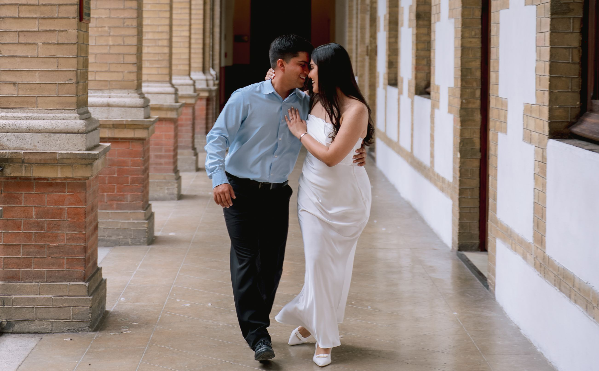
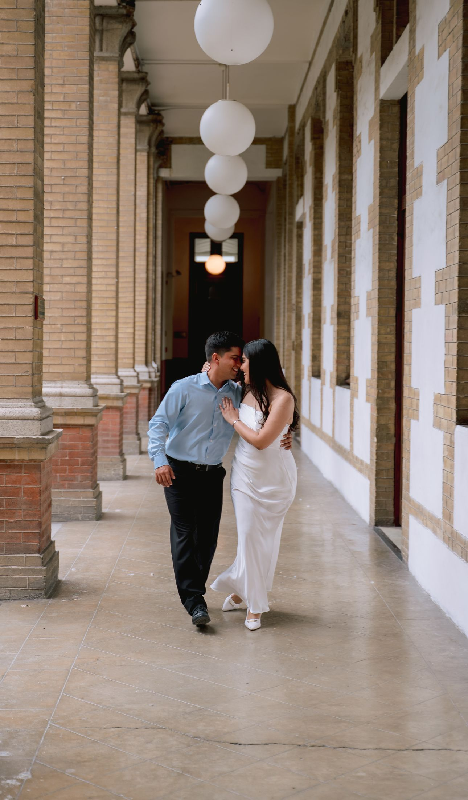

Un amor tan grande merece celebración
Fernanda y Roberto
De la mano de Dios y con la bendición de nuestros padres:
Gustavo Javier Ayala Islas
Elizabeth García González
Roberto Arturo López García
Thelma Guadalupe Tanguma Villalobos
Gustavo Javier Ayala Islas
Elizabeth García González
&
Roberto Arturo López García
Thelma Guadalupe Tanguma Villalobos
Nos complace invitarlos a compartir con nosotros la alegría de celebrar nuestra unión en matrimonio
18
Octubre
2026
Itinerario
Dress Code
Formal
Caballeros
Traje negro
Damas
Vestido largo evitar colores claros
Save the Date
00
DIAS
00
HORAS
00
MinUTOS
00
SeGUNDOS
Confirma tu Asistencia
- Solo adultos -
RSVP
Sugerencia de Regalo
Nuestro mejor regalo es su presencia y buenos deseos.
En caso de que deseen
hacernos un obsequio, dejamos las siguientes opciones
Efectivo en sobre
el día del evento
Transferencia · Afirme
Fernanda Ayala